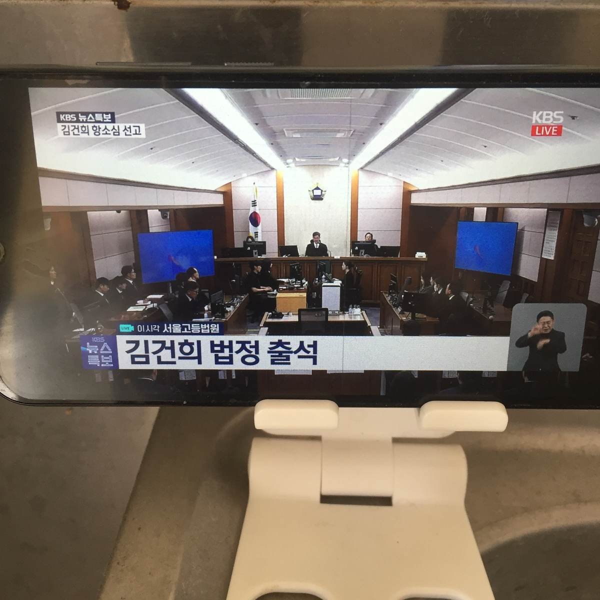
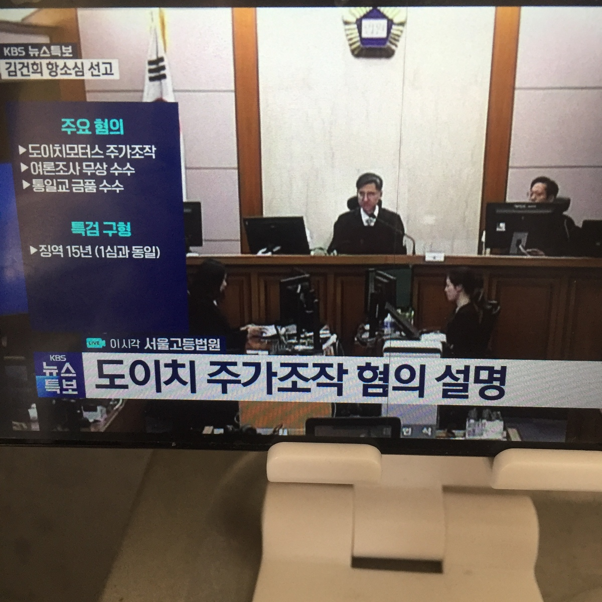
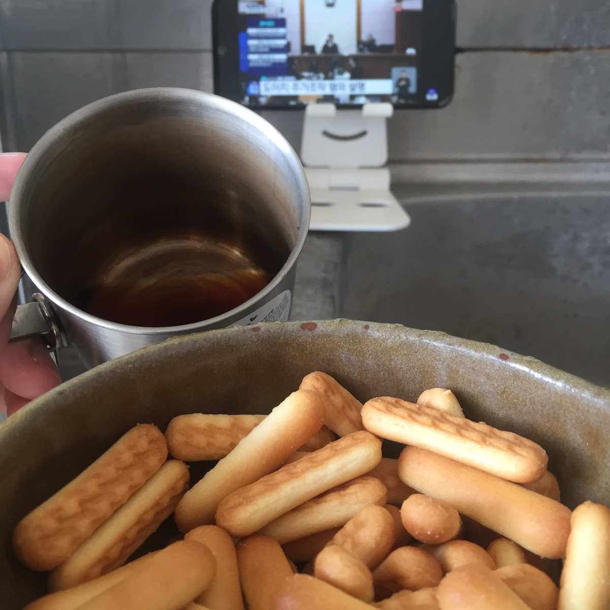
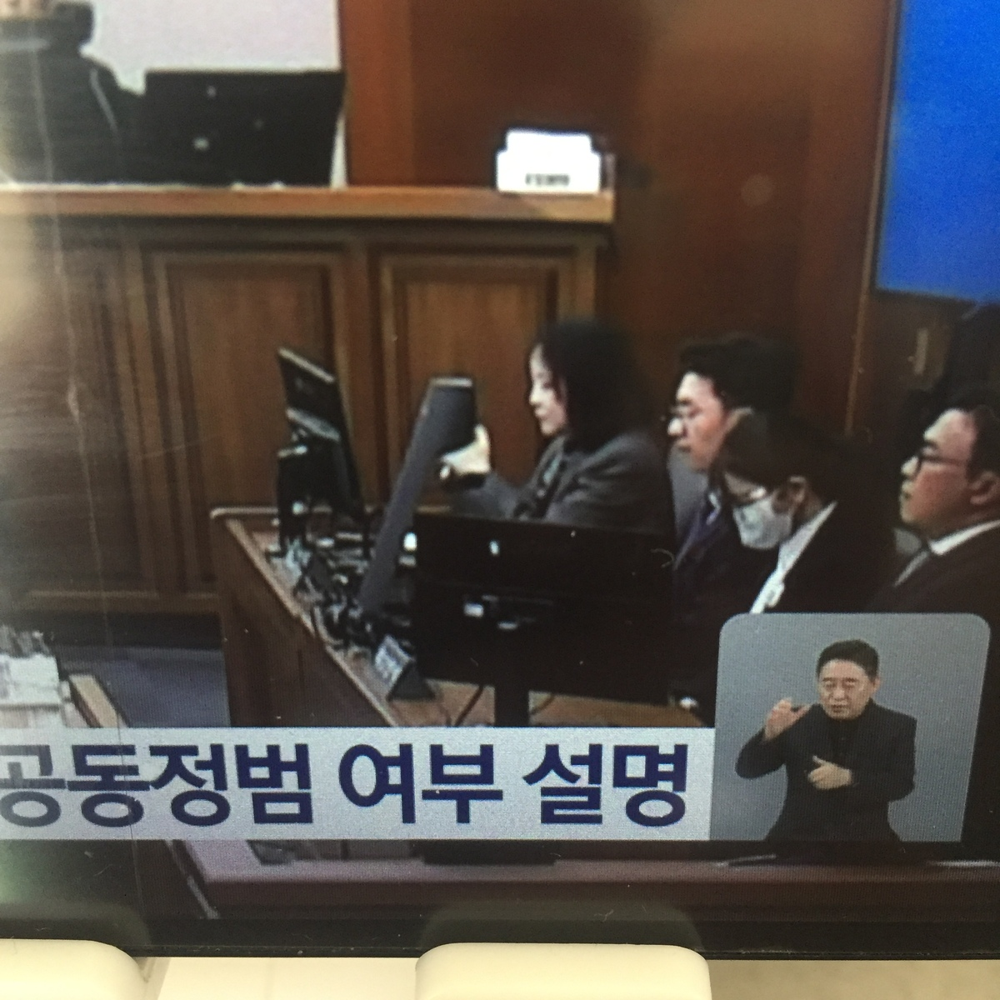

26. 4. 28 金建希 2審宣告公判
まず今日の宣告公判が午後3時から始まるということを確認なさって下さい。
뒤집힌 '샤넬백 판단'…김건희 2심에선? 오후 3시 생중계
https://news.jtbc.co.kr/article/NB12296005
WATCH LIVE (3pm-):
https://www.youtube.com/live/RQ9OwkuyFBE
It started at 3 p. m.




FACT CHECK
これの目的は私がこれまで金建希の公判の最新映像を紹介しなかった訳ではない、ということを証明することです。もちろん今日4/28にはこれまで無かった新たな映像が公開されるはずです。
FACT CHECK (1. 一般原則)
READ THESE ARTICLES:
김건희 재판은 '중계 0번' 왜? 법정에도 '재판 CCTV' 달린다 [서초동M본부]
https://imnews.imbc.com/newszoomin/newsinsight/6768883_29123.html두 달 만에 공개된 '피고인 김건희'...중계 일부 허가
https://www.ytn.co.kr/_ln/0103_202511192140192340